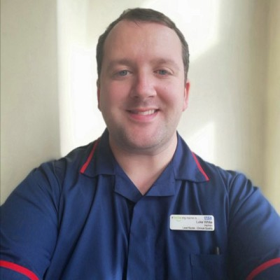

CNENet UK Committee Members
The CNENet Committee provides leadership and oversight for the network. Here are the members and their roles:

Luke White
Chair
A compassionate, dedicated and experienced nurse, passionate about clinical education, coaching, nurturing and growing our future clinical workforce. Wants to inspire others to achieve more and to realise their goals. Motivated to provide patients with high quality care through education and leading education teams to provide support for our clinical staff. Experienced in the Clinical Educator role development, NMC OSCE preparation, project management, leading transformational changes and growing our workforce. Co-Chair of the LTHT Disabled Staff Network and the LTHT Deaf and Hard of Hearing Action Group - promoting and leading work on reducing inequalities for all.
Finn Tysoe
Deputy Chair
Finn is an avowed generalist who embraces Robert Heinlein’s maxim that ‘specialisation is for insects’. They are naturally curious and willing to look past assumptions in order to be alongside people. Throughout their life they have supported people through times of crisis and uncertainty.
Currently Finn leads a team of clinical educators to deliver academic and practice-based learning. Finn firmly believes they are the best team. In 2023 the team's work received an NHS England award for pastoral care of Internationally Educated Nurses.
Finn’s key area of interest is supporting nurses and midwives in transition between levels of practice. They contribute to cancer policy, international education programmes and advanced communication skills training. They have taught and continue to learn from nurses in Palestine and Tanzania.

Steering Committee
- Liavel Vargas
- Liz Allibone
- Rachel Wright
- Lianne Ford
- Shikha Sharma
- Carol McEachran
- Emma McKeever
- Tom Challacombe
- Theiba Khan